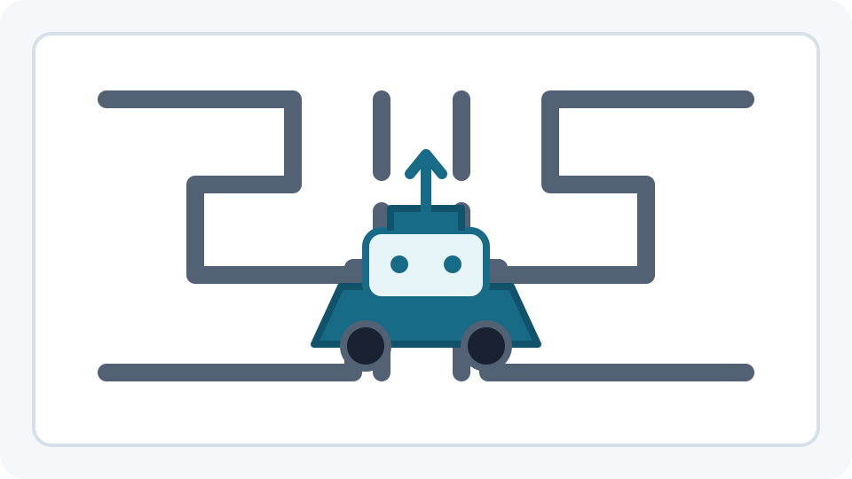

GOOB is a 2D colony survival simulation I’m building in Unity with friends. Players guide a colony of named villagers, called Goobs, as they farm, mine, gather resources, and construct new buildings through a day/night cycle and changing seasons. I’m combining hand-written code with AI-assisted development to produce a clean, polished final game.
A multiplayer survival extraction shooter I developed in Unity. Players load into a map, fight other players, and try to extract with loot to build up their base. I built core systems including host/client multiplayer, first-person gunplay with aim-down-sights and a recoil viewer for tuning weapons, and an inventory and crafting interface. The game was never finished, but it taught me a lot about networking and game systems.
Tools: Unity, C#
Unmanned Rover

Illustration — original photos were lost.
A semester-long robotics project at Warren County Community College, where my team built a fully autonomous rover that could drive itself through a maze. I wrote its navigation in C++ by hand and spent the semester testing and rewriting that code while rebuilding and repairing the rover. In the end, we became the first team in the course’s history to fully complete the maze.